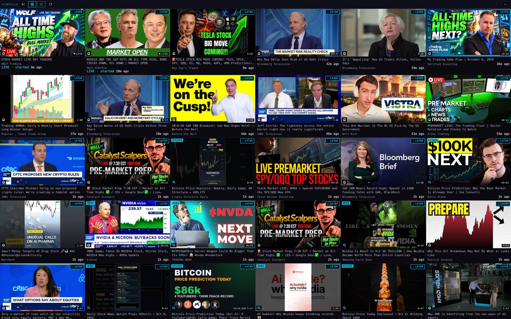
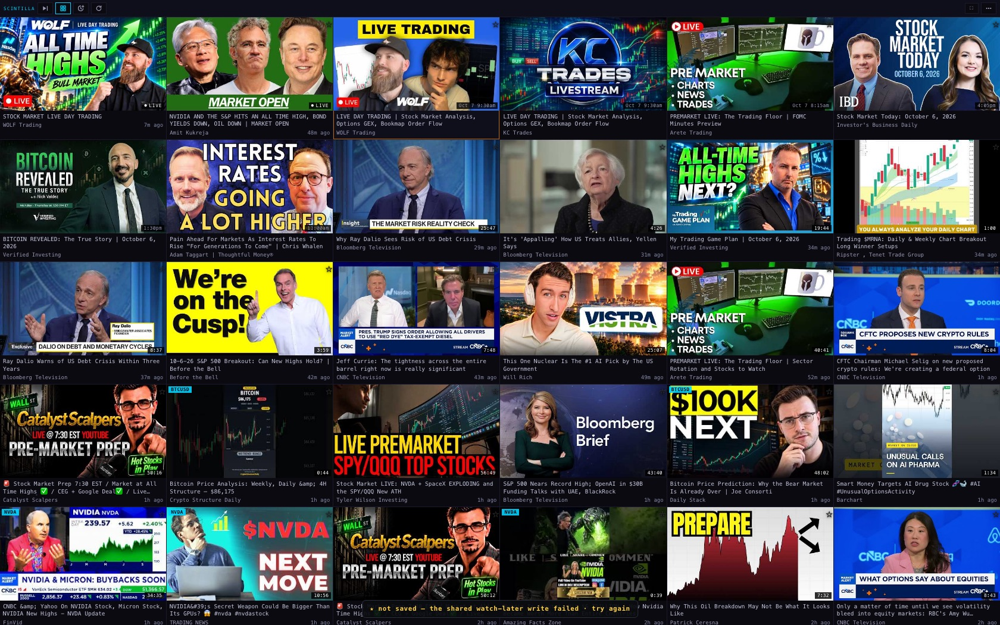
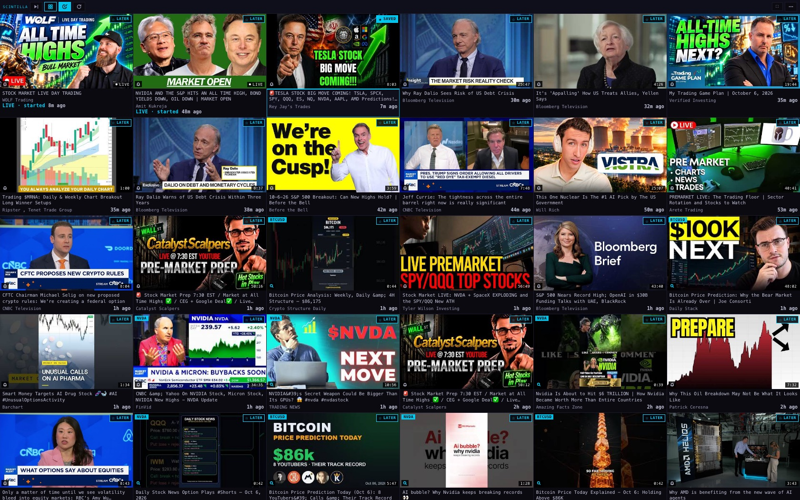
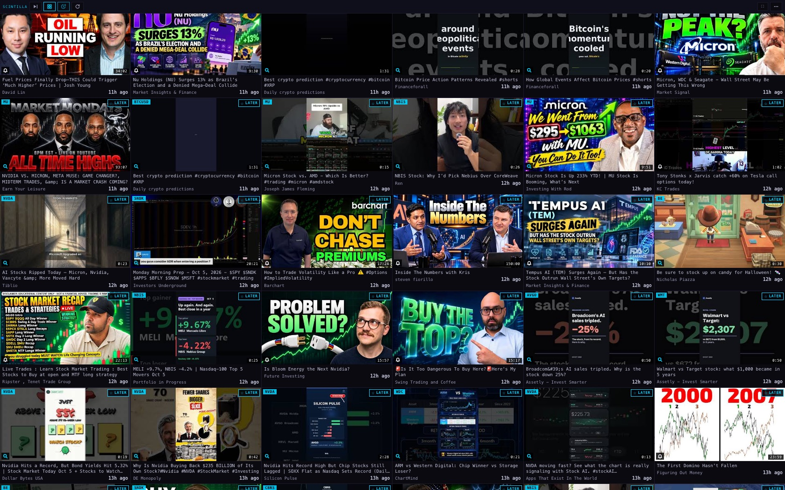
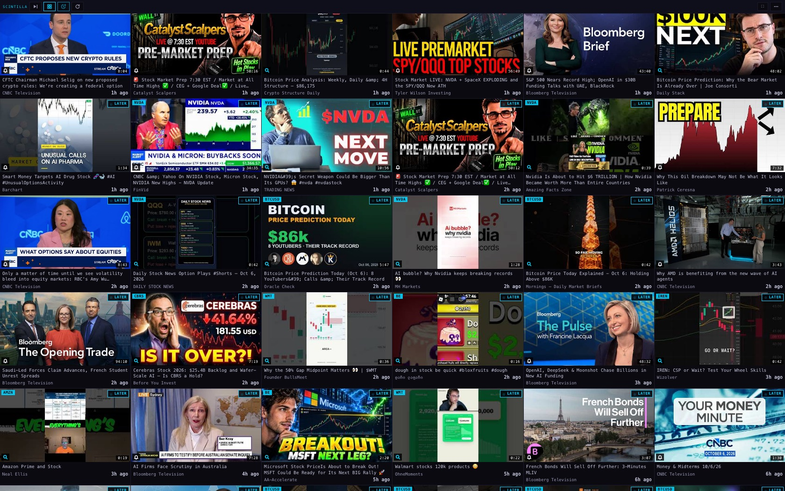
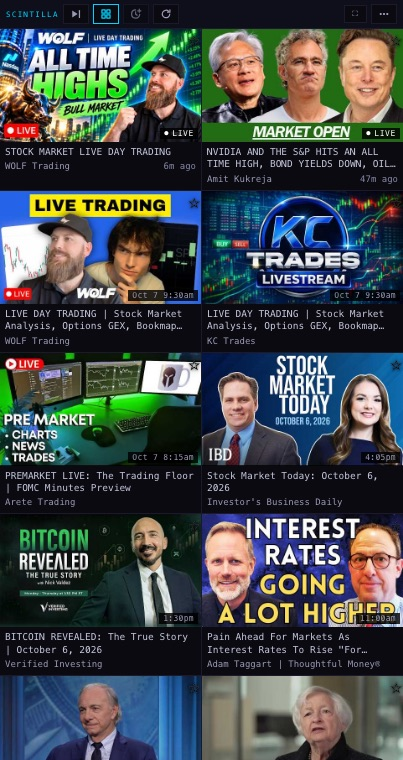
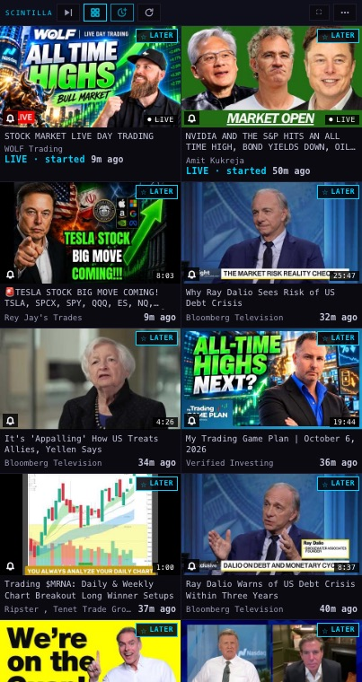
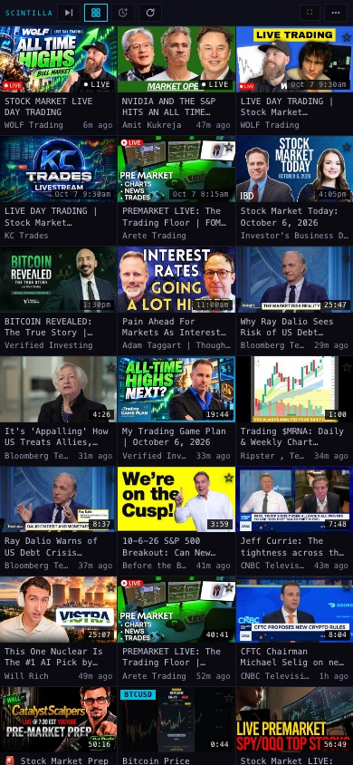
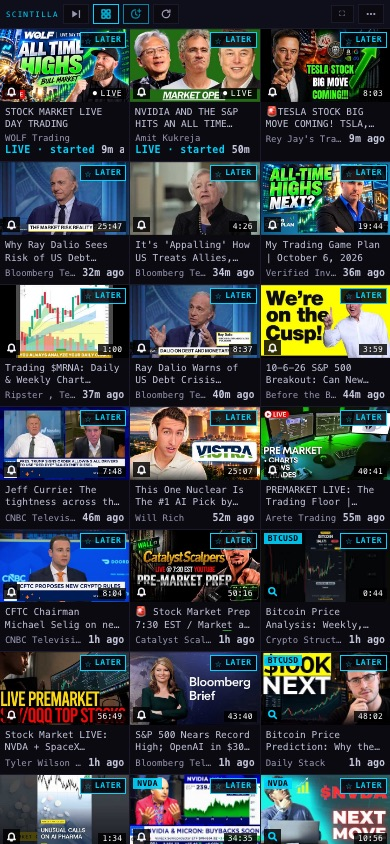
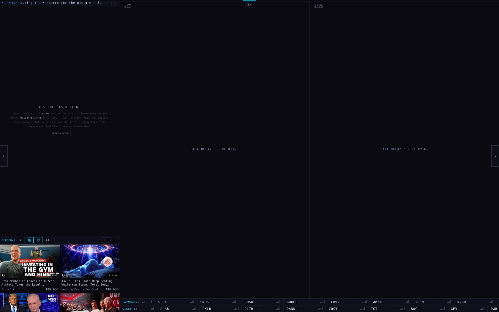

The Station's YouTube feed — in time order, live when it starts, and a Watch Later that saves
6 Oct 2026. Nothing here is switched on yet: it is on two branches for you to look at. The pictures are from a test browser with no window, 1680 × 1050, reading the real feed at about 9:35 am New York time.
The grid, before and after



Watch Later, before and after




The four cases you named
| Case | Why it was missing | Now |
|---|---|---|
| Tyler Wilson, live this morning | His stream started at 8:01:43 am. It reached our list at 8:10:04 am, 8 minutes 21 seconds late. The "is this channel on air?" check only looked at the 37 channels bridged from X, and his channel is a subscription, so it waited for YouTube's own channel feed, which was slow. From 8:10 to 8:58 it was in the list marked live; whether your screen showed it in that window cannot be reconstructed. | On the branch every subscribed channel that streams is asked every 20 minutes, alongside the channel feed every 5 minutes. Today his finished stream is tile 16, "1h ago". |
| Verified Investing | Its streams are created the day before. The grid filed a stream under its scheduled time, so it sat at the top as a "not started" tile for 17 hours and then jumped when it began. One of its cancelled streams (2 Oct) is still stored as "upcoming". Separately, a stream scheduled more than three days ahead stopped being re-checked and never turned live: 17 stored rows are in that state. | A stream appears when it starts and is placed by its real start time. Today's "My Trading Game Plan" is tile 6, "34m ago". Scheduled streams are re-checked by their start time, however early they were created. |
| Market Signal, Micron / WDC / Seagate | The channel has not been collected since 10 September. YouTube's public feed for it lists 15 videos since 18 September, including this one (posted 9:43 pm on 5 Oct New York time); none is in our list. The channel is on no list the collector reads. | Not fixed until one list change is applied (staged, with its undo). The picture below shows the grid with those videos added by hand to the test browser. |
| Watch Later | The Google sign-in for your personal YouTube account has expired. The save asked Google first and stopped there, before writing our own list. The last save that landed was 29 September. It was not last night's access rules. | On the branch a save is written to our own list first and shows as saved. YouTube's own playlist is brought up to date when the sign-in works again. |


The Station's own pane width, and a phone









The order, in one sentence
Where each thing on a tile comes from
- "34m ago" — the time since the video became watchable, from YouTube's own times. It is never the time we collected it.
- "LIVE · started 7m ago" — YouTube says the stream is on air; the minutes count from YouTube's start time. If YouTube gives no start time, the first minute we saw it live is used and kept.
- Bell — the video's channel is on one of your saved subscription lists, or is one of the 37 channels bridged from X. Cyan magnifier — the video is there only because a ticker search found it.
- LATER / SAVED — from the shared Watch Later list in our own database, the same list the Hub reads.
What could be wrong
- A stream can still appear up to about 20 minutes after it starts when YouTube's channel feed is slow, because the on-air check runs every 20 minutes. You asked for 10 at most; that needs the check to run twice as often (decision 1).
- The wider on-air check has only been run in tests. From the collector's data centre YouTube may slow down or wall some of the page reads; the collector records which channels it could not read.
- Your six YouTube sign-ins are still expired. A channel you subscribe to on YouTube today does not reach the Station until SCINTILLA and PERSONAL are connected again.
- Two other channels also stopped being collected, both on the PERSONAL list on 12 August: Megyn Kelly and Mario Nawfal. They may be channels you unsubscribed from, so they are not restored.
- Saved videos made while the sign-in is down are in our list at once but reach YouTube's own playlist only after the sign-in is back.
What was not done
- Nothing was deployed and no table was written. The Watch Later failure was reproduced with a request that carries no video, so it could not save anything.
- The ticker-search collector was left alone. The copy in the code line is two versions behind the one running, so it was not safe to edit.
- The age still reads "34m ago" and "3h ago" rather than "34 min ago". It is the wording the rest of the Station uses; changing it is a one-line change if you prefer the longer form.
- The PERSONAL pane's tiles do not carry the LATER plate (only the SCINTILLA grid does, as before); on PERSONAL the clock button on the bar saves.
- Tyler Wilson's tile during his broadcast could not be pictured: the stream had ended before this work began.
PAGE SPECS
Branches: Hub hub/y4-youtube-feed-20261006 (collector yt-rss-sweep v10, staged list change, this page); Station station/y4-youtube-grid-20261006 (the two video shells, the Watch Later function yt-act, the picture tools).
What the coordinator deploys, in this order: (1) yt-act from the Station branch; (2) yt-rss-sweep from the Hub branch, with _shared/yt-bridge.mjs; (3) the Station; (4) apply staged/y4-youtube/01_market_signal_back_on_the_scintilla_list.sql (expect UPDATE 1; undo file beside it). No table, column or access-rule change is needed.
Measurements behind this page: data/picture-facts.txt (what each picture run counted), data/lost-channels.json (164 channels compared with YouTube's public feeds). Read at 13:17–13:40 UTC on 6 Oct with the pages' own public key; the Watch Later answer was personal YouTube authorization unavailable · invalid_grant.
Tests: Hub 1,969 → 1,982 with the same 7 failures. Station 987 → 1,012 with the same 18 failures. Six older assertions that pinned "only bridged channels are asked" now count the carried channel too.
Patterns followed: the on-air read is the one yt-dlp's channel-tab extractor uses (follow /live to the watch page, read the player's live flag); Watch Later is the "outbox" pattern (write your own record first, deliver to the outside service afterwards and retry) as described at microservices.io/patterns/data/transactional-outbox.html.
Neighbours checked: the on-air pass still ends inside its 45 seconds, the schedule's 120-second wait and the collector's 180-second lock; the number of stored rows re-asked per pass is still capped at 200, so no extra YouTube allowance is spent; the playlist copy sends at most 8 videos per save (50 units each of a 10,000-unit day).